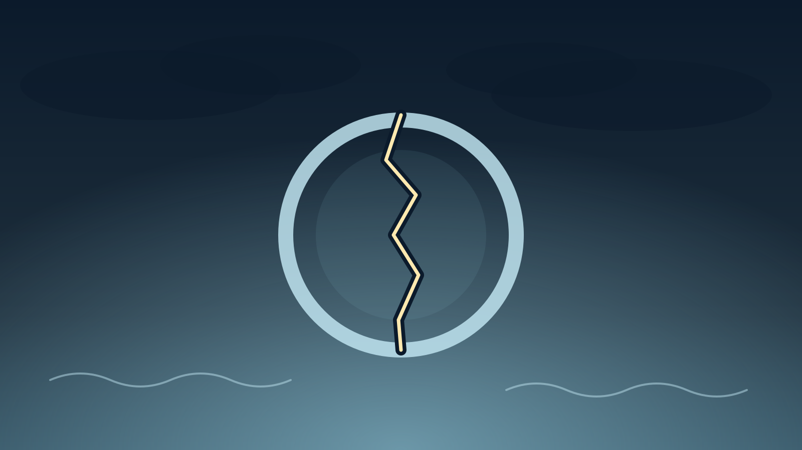

Trastorno de estrés agudo
La reacción intensa en las primeras semanas después de un hecho traumático: qué es y cuándo pedir ayuda.
Qué es
El trastorno de estrés agudo es una reacción intensa que aparece entre los 3 días y el primer mes después de vivir o presenciar un hecho traumático (accidente, agresión, pérdida repentina, desastre). Incluye síntomas como recuerdos intrusivos, pesadillas, evitación, sensación de irrealidad, hipervigilancia y dificultad para dormir. Es una respuesta humana comprensible frente a algo abrumador, y en muchas personas mejora con el paso de los días y con apoyo, aunque en otras puede requerir tratamiento.
Diferencia con el estrés postraumático (TEPT)
La diferencia principal es el tiempo.
- El estrés agudo se da en el primer mes tras el hecho (desde los 3 días); si los síntomas persisten más allá de un mes, se evalúa un posible estrés postraumático.
- No todas las personas con estrés agudo desarrollan TEPT, pero tenerlo aumenta el riesgo, por eso conviene consultar temprano.
- Los síntomas pueden ser muy similares; lo que cambia es la duración y la evolución.
Podés ver el tema Estrés postraumático para más información.
Señales frecuentes
Suelen aparecer varias a la vez, con distinta intensidad.
- Recuerdos, imágenes o pesadillas del hecho que aparecen sin querer.
- Evitar personas, lugares o conversaciones que recuerdan lo ocurrido.
- Sentirse "anestesiado", desconectado, o como si lo vivido no fuera real.
- Estar en alerta constante, sobresaltarse con facilidad o tener dificultad para dormir.
- Irritabilidad, dificultad para concentrarse o sensación de estar "al borde".
Qué puede ayudar
Cuidados generales en las primeras semanas. No reemplazan una evaluación profesional.
- Mantener rutinas básicas de sueño, comida y descanso, aunque cueste.
- Buscar compañía de personas de confianza, sin obligarte a contar lo ocurrido si no estás listo.
- Evitar el alcohol y otras sustancias como forma de "calmar" los síntomas.
- Permitirte un tiempo de recuperación: los síntomas no indican debilidad.
Cuándo consultar
Pedir ayuda temprano puede prevenir que el cuadro se prolongue.
- Los síntomas son intensos o te impiden trabajar, dormir o cuidarte.
- Pasaron varias semanas y los síntomas no mejoran, o empeoran.
- Aparecen ideas de muerte o de hacerte daño: es una urgencia.
- Notás un aumento del consumo de alcohol u otras sustancias para sobrellevarlo.
Plan breve
Un resumen en pasos para releer rápido si esto te resuena.
- Si hay ideas de muerte o de hacerte daño, buscá ayuda urgente ahora.
- Cuidá lo básico: dormir, comer, descansar y estar acompañado/a.
- Evitá el alcohol y otras sustancias para manejar los síntomas.
- Si pasan varias semanas sin mejoría o los síntomas te limitan, pedí una consulta profesional.
Recursos relacionados
Otros materiales del sitio que pueden complementar este tema.
¿Querés orientación profesional?
Si esto te resuena, la Central de Turnos puede ayudarte a coordinar una consulta.